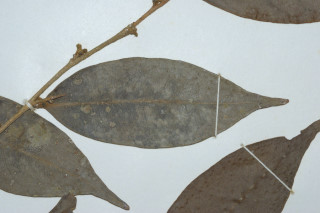

Images :


| Habit : | Trees up to 12 m tall. |
| Leaves : | Leaves simple , alternate , distichous ; petioles 0.2-0.6 cm long, glabrous ; lamina 4-9 x 1.5-3.5 cm, elliptic , apex acuminate , base slightly asymmetric , margin entire , subcoriaceous , glabrous , pale greenish to brown when dry; midrib flat above; secondary_nerves 6-9 pairs; tertiary_nerves admedially_ramified . |
| Inflorescence / Flower : | Flowers unisexual ; male flowers axillary clusters; female flowers axillary , solitary . |
| Fruit and Seed : | Drupe , ovoid to ellipsoid 1.7-2 x 1.5 cm, smooth, glabrous ; 1-seeded . |